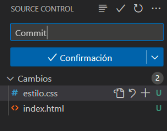

Como crear nuevos repositorios
Comenzaremos en la pagina de inicio de GitHub, en ella le daremos al boton azul que pone "New", al pulsarlo nos
mandara a una pagina en la que diremos como se llama el repositorio y a quien le pertenece, y por supuesto si sera publico
(todo el mundo lo vera) o privada. Y le daremos al boton "Create repository"

Como añadir colaboradores
A continación, dentro del repositorio creado en el apartado anterior, haremos click en "Settings" y el apartado "Access"
nos encotraremos la pestaña "Collaborators". Dentro de la pestaña en cuestion, daremos click en "Add people", nos mostrara
una pequeña ventana en la cual introduciremos el nombre o correo de la cuenta de GitHub de la persona a la que queremos compratir
el repositorio.
Por parte del invitado, tendra que aceptar la invitacion, a la campanita en la esquina superior derecha al lado de su foto de perfil,
en la cual tendra una notificación de invitacion. Solo tendramos que meternos dentro de ella y aceptarla.

Añadirlo a VisualStudio
- Abre Visual Studio.
- En el menú superior, selecciona "Archivo" y luego "Nuevo" y "Proyecto desde control de código fuente".
- Selecciona "GitHub" en el menú desplegable y haz clic en "Conectar".
- Ingresa tus credenciales de GitHub y haz clic en "Aceptar".
- Selecciona el repositorio que deseas usar y haz clic en "Clonar".
- Visual Studio descargará el repositorio en tu computadora y lo abrirá en el Explorador de soluciones.
- A partir de aquí, podrás trabajar con el repositorio como cualquier otro proyecto en Visual Studio, realizando cambios, realizando confirmaciones y pushs, entre otros.
Creación de un Commit
- Realiza cambios en los archivos de tu proyecto.
- En el menú superior, selecciona "Equipo" y luego "Confirmar".
- En la ventana "Cambios pendientes", escribe un mensaje descriptivo para tu commit en el campo "Mensaje de confirmación".
- Si deseas, puedes agregar una descripción más detallada del commit en el campo "Descripción".
- Si deseas incluir otros archivos en el mismo commit, selecciona los archivos en la ventana "Cambios pendientes".
- Haz clic en el botón "Confirmar todo" para confirmar los cambios y crear el commit.
